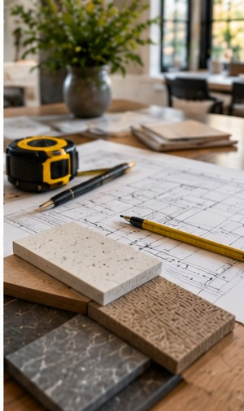

Planning / Renovation Journal
How to Compare Renovation Proposals
Look beyond the total to understand what is actually being offered.
Retrospective topic: August 2024 · Oakwaters Journal

Two estimates can differ substantially because they assume different materials, preparation work, and responsibilities.
Begin with the way you live
Compare scope descriptions, exclusions, allowances, schedule assumptions, and how changes will be handled.
Before selecting finishes, take measurements and note the everyday frustrations you want the renovation to resolve. A clear understanding of what is not working today helps keep later choices grounded in practical outcomes.
Consider the details behind the design
Ask who coordinates trades, how site protection works, and what documentation will be provided at handover.
It is also worth discussing the sequence of work. Some decisions affect framing, rough-in, or ordering and become expensive to revise once construction is underway. Confirming those details early gives the design room to develop without unnecessary rework.
Think about the finished home
A well-defined proposal is a tool for avoiding surprises.
Bring inspiration photographs, approximate measurements, and a realistic description of your priorities to the first conversation. A contractor can then help identify the questions that need to be resolved before the scope and budget are finalized.
Planning a renovation?
Explore what is possible for your home with Oakwaters Construction.
Discuss Your Project →